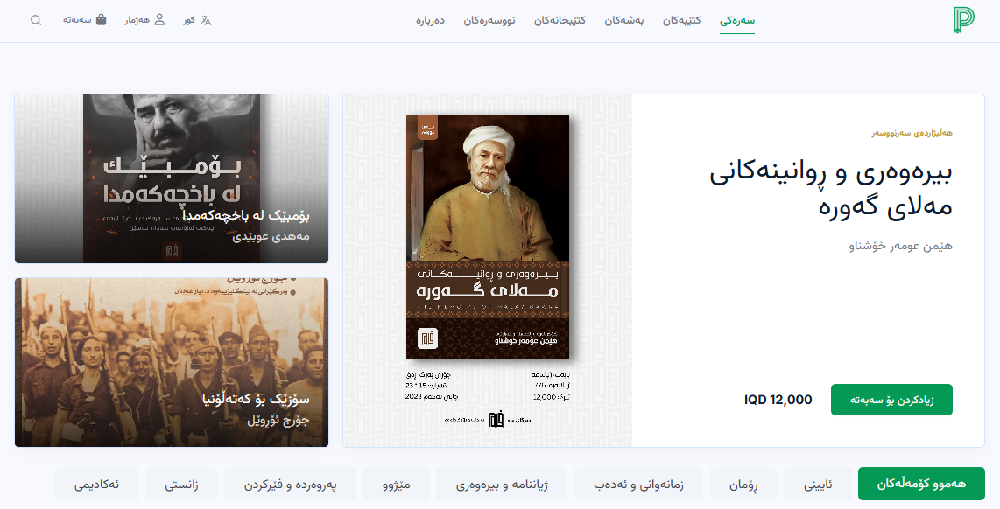

Startup Project
PERTWK
A multi-vendor book marketplace with 1,500+ books and more than 10 bookstore partners.

Project Overview
PERTWK is a bookstore platform designed to support multiple tenants while keeping store operations isolated. I worked on the Laravel backend, REST API design, SSR storefront integration, and the admin-side workflows needed to operate catalog, inventory, orders, and permissions.
The goal was to create a system that felt simple for customers while still handling the complexity of tenant-aware store management behind the scenes. That meant keeping store data separated correctly, exposing stable APIs, and making the Nuxt frontend work smoothly with the Laravel backend.
Key Features
- Catalog and inventory management across isolated tenant stores.
- Order workflows, authentication, and role-based access control.
- SSR customer storefront backed by a Laravel REST API.
- Admin dashboard for store operations and tenant-aware management.
Technology Stack
Laravel 10
PHP
Nuxt 4
Vue 3
Pinia
Tailwind CSS
MySQL
REST API